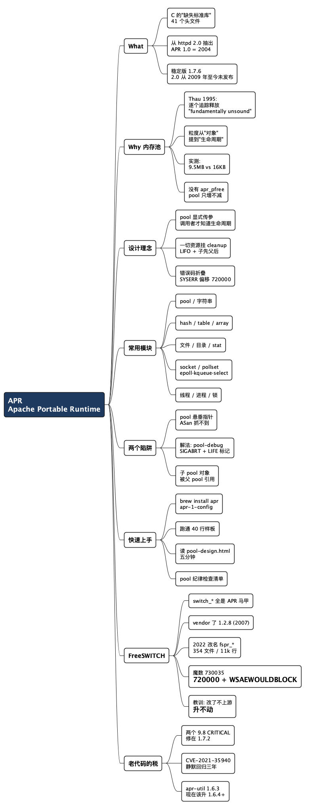

APR 入门：一个 30 年前的答案，为什么还在你的代码库里
Posted on 日 06 9月 2026 in Tech
| Abstract | APR（Apache Portable Runtime）入门 |
|---|---|
| Authors | Walter Fan |
| Category | Tech |
| Status | v1.0 |
| Updated | 2026-09-06 |
| License | CC-BY-NC-ND 4.0 |
大纲
展开看看
- 核心结论：APR 值得学，不是因为它现代，而是因为你绕不开它——而且它的内存池思路把"谁负责 free"这个问题从每个对象降维成了每个生命周期。
- What：Apache 为了写跨平台的 httpd 2.0 攒出来的 C 运行库，41 个头文件覆盖内存、文件、网络、进程、线程、哈希表、字符串。最新稳定版 1.7.6（2025-05），2.0 从 2009 年至今没发布。
- Why 内存池：Robert Thau 1995 年在
alloc.c里的原始注释说得最狠——逐个追踪释放是"a fundamentally unsound strategy"。实测：20 万次分配，用错模式 RSS 涨 9.5 MB，用对了涨 16 KB。 - 三条设计理念：① 生命周期是一等公民（pool 传参、没有
apr_pfree）；② 一切资源挂 pool（cleanup 回调，LIFO，子先父后）；③ 错误码统一折叠（APR_TIMEUP= 70007，apr_strerror到处能用）。 - 常用模块：一张表列 10 个真正天天用的 API 组，以及各自解决了什么平台差异。
- 两个致命陷阱：pool 释放后的悬垂指针，ASan 抓不到（实测：ASan 全开，程序照样打印出旧字符串，exit 0）。解法是编译期开
--enable-pool-debug=all，实测能 SIGABRT 并打出LIFE标记。 - 快速上手：4 步 + 一段 40 行可编译的样板，跑一遍比读十篇文档快。
- FreeSWITCH 怎么用它：vendor 了一份 APR 1.2.8（2007 年） 的 fork，2022 年把全部符号从
apr_*改名成fspr_*；switch_apr.c里那句注释很实在——"thank APR for all the awesome stuff it does"。另外解释了源码里status == 730035这个魔数是怎么来的。 - 老代码的税：CVE-2021-35940 是最好的教材——1.6.3 修过的漏洞，1.7.0 分支时忘了带过去，静默回归三年。
去读一份 C 写的服务端老代码，你迟早会撞见这样一行函数签名：
switch_status_t switch_core_session_create(switch_core_session_t **session,
switch_memory_pool_t *pool);
第二个参数是干什么的？为什么建一个会话对象要外面传一块"内存池"进来？为什么整个代码库里几百个函数，最后一个参数都是这个 pool？
答案是 APR——Apache Portable Runtime。这套东西 1995 年在 Apache 的 alloc.c 里成型，比 Java 还老。它不时髦，API 风格像上个世纪，官方的 2.0 版本从 2009 年"开发中"到现在还没发布。
但 Apache httpd、Subversion、FreeSWITCH、Tomcat 的 native 层，这些还在跑生产流量的东西，都建在它上面。你不需要在新项目里选它，但你很可能需要读懂用它写的代码。 而它最值得偷走的那个想法——把内存管理的粒度从"每个对象"提到"每个生命周期"——今天在 Rust 的 arena crate、Go 的 sync.Pool、游戏引擎的 frame allocator 里到处都是。
下面的代码都在 macOS + Apple clang + APR 1.7.6 上真跑过，贴的是实测输出。
What：C 语言那个迟到了三十年的标准库
C 的标准库停在 1989 年的世界观里：文件 IO 有，socket 没有；malloc 有，线程没有；进程、目录遍历、内存映射、共享内存、动态加载、原子操作，一个都没有。想写跨平台的 C 服务端，你得自己填这些坑，而且每个平台填法不一样。
Apache 在 httpd 1.x 时代把这些坑填在了服务器代码里。写 2.0 的时候，他们把这部分抽出来做成独立库，这就是 APR。APRDesign.html 里的原话：
The original goal of APR was to combine all code in Apache to one common code base.
httpd 2.0 GA 是 2002 年 4 月（2.0.35），当时捆绑的是 APR 0.9.x；APR 自己的 1.0.0 要等到 2004 年 9 月才发布。
官网那段 mission statement 讲得很准：
...provide an API to which software developers may code and be assured of predictable if not identical behaviour regardless of the platform on which their software is built.
注意 "predictable if not identical"（可预期，未必完全一致）——这是句诚实话。APR 不承诺 Windows 和 Linux 上行为完全一样，只承诺差异有明确定义，你不用为每个平台写 #ifdef。
规模：
$ ls /opt/homebrew/opt/apr/include/apr-1/*.h | wc -l
41
$ apr-1-config --version
1.7.6
41 个头文件，从 apr_pools.h（内存）到 apr_network_io.h（socket）到 apr_thread_proc.h（线程和进程）到 apr_skiplist.h（跳表）。另有一个 apr-util 提供更上层的东西（DBD 数据库抽象、LDAP、XML、加密、base64、MD5）。
两条你该知道的项目现状：
- 稳定版是 APR 1.7.6（2025-05-16），apr-util 1.6.5（2026-08-10）。
- APR 2.0 从来没发布过。 trunk 在 2009 年 1 月就被改成了
2.0.0-dev，至今约 17 年。2.0 的主要变化之一是把 apr-util 合并回 apr——trunk 的 STATUS 一句话："Effective with version 2.0, apr-util ceases to exist."
一个库能十七年不发大版本还活着，说明两件事：它足够稳，以及它已经不再是任何人的战略方向。用它可以，别指望它进化。
Why：为什么核心是"内存池"而不是"跨平台"
跨平台只是 APR 的门面。真正让它有性格的是内存池（memory pool），而这个设计的动机，Robert Thau 1995 年写在 alloc.c 的注释里，三十年后还原封不动留在 apr_pools.h：
/*
* Resource allocation routines...
*
* designed so that we don't have to keep track of EVERYTHING so that
* it can be explicitly freed later (a fundamentally unsound strategy ---
* particularly in the presence of die()).
*/
"逐个追踪、稍后显式释放，是一种根本上不成立的策略"——尤其是在有 die()（异常退出）的情况下。
这话说的是 C 服务端最经典的溃败方式。你写一个请求处理函数，中间十个步骤，每步都可能失败。每次失败都要把前面分配的东西按相反顺序释放干净：
/* 这种代码谁都写过，也谁都写错过 */
int handle(const char *input) {
char *a = malloc(...); if (!a) return -1;
char *b = malloc(...); if (!b) { free(a); return -1; }
char *c = malloc(...); if (!c) { free(b); free(a); return -1; }
FILE *f = fopen(...); if (!f) { free(c); free(b); free(a); return -1; }
/* ... 又加了三个步骤之后，上面每一行的 cleanup 都要跟着改 ... */
}
错误路径是测试覆盖率最低的地方，也是内存泄漏最爱藏的地方。C++ 用 RAII 解决了这个问题（把释放绑到析构函数），但 C 没有析构函数。
APR 的答案换了个方向：不追踪每个对象，只追踪生命周期。
一个请求进来，建一个 pool；这次请求需要的所有内存都从这个 pool 里拿；请求结束，整块销毁。中间任何一步失败，直接 goto done 销毁 pool 就完事，不需要记得释放什么。
apr_pool_t *req;
apr_pool_create(&req, root); /* 请求开始 */
char *a = apr_palloc(req, 64); /* 不检查、不记录、不配对 */
char *b = apr_pstrdup(req, input);
apr_table_t *hdr = apr_table_make(req, 8);
apr_pool_destroy(req); /* 请求结束，a/b/hdr 一起消失 */
注意 APR 里没有 apr_pfree()。 这不是遗漏，是设计决定：你无法释放单个分配，只能 clear 或 destroy 整个 pool。（apr_allocator_free() 确实存在，但它作用在底层的 apr_memnode_t 内存块上，不是 apr_palloc 的返回值。）
代价也很明确：pool 只会长大，不会缩小。 这是 APR 最容易踩的坑，也是它唯一必须记住的纪律。
我写了段程序实测：20 万次字符串分配，一次全从长生命周期的 pool 里拿，一次用子 pool 每轮 clear。
for (int i = 0; i < 200000; i++) {
apr_pool_t *p = root;
if (use_subpool) { apr_pool_clear(sub); p = sub; }
(void)apr_psprintf(p, "%s-%08d-%s", "session", i, "padpad...");
}
$ ./grow
root pool only: RSS 1520 KB -> 11040 KB (delta 9520 KB)
$ ./grow s
subpool+clear: RSS 1552 KB -> 1568 KB (delta 16 KB)
9.5 MB 对 16 KB，差了 600 倍。 一个长期运行的服务里，把这个循环放在连接处理路径上，就是一条缓慢但确定的内存泄漏——而且 valgrind 不会报，因为技术上它没泄漏，只是"还没释放"。
APR 官方的 Using APR Pools 就是为这个坑写的，作者 Greg Stein 是 Subversion 的核心开发者、后来做过 ASF 主席。他给的模式是：
subpool = apr_pool_create(...);
for (i = 0; i < n; ++i) {
apr_pool_clear(subpool); /* 在循环入口 clear，不是出口 */
do_operation(..., subpool);
}
apr_pool_destroy(subpool);
clear 放在入口而不是出口，是个很妙的细节——这样循环里写 continue 也不会漏掉清理。这种"把正确性做成默认行为"的小设计，比记住一条规则可靠得多。
三条设计理念
1. 生命周期是一等公民，所以 pool 必须显式传参
Greg Stein 那份文档里最反直觉的一条：
Objects should not have their own pools. An object is allocated into a pool defined by the constructor's caller. The caller knows the lifetime of the object.
Functions should not create/destroy pools for their operation; they should use a pool provided by the caller.
翻译成人话：对象不该自己管内存，因为它不知道自己该活多久——调用者才知道。
这就是为什么 APR 代码里几乎每个函数的最后一个参数都是 apr_pool_t *pool。看起来啰嗦，但它把"这个东西活多久"这件事写进了函数签名，跟现代 C++ 用 unique_ptr / span 把所有权写进签名是同一个思路——只不过 APR 靠人自觉，C++ 靠编译器检查。
同一份文档还有一句常被忽略的对比：
Apache httpd is a completely different beast: "allocate a request pool. use it. destroy it."
也就是说，这套严格纪律是给库和结构化程序用的。httpd 自己的用法糙得多，因为它的生命周期模型简单到只有一种。所以别把这份文档当成 APR 的唯一正解，它是"复杂场景下的正解"。
2. 一切资源都能挂在 pool 上，不只是内存
pool 不只管内存。你可以注册 cleanup 回调，pool 销毁时自动执行——socket、文件句柄、锁、第三方资源都能挂上去：
apr_pool_cleanup_register(pool, conn, close_my_conn, apr_pool_cleanup_null);
顺序有讲究，实测一下：
apr_pool_create(&a, root); apr_pool_create(&b, a); /* b 是 a 的子 pool */
apr_pool_cleanup_register(a, "A-first", mark, apr_pool_cleanup_null);
apr_pool_cleanup_register(a, "A-second", mark, apr_pool_cleanup_null);
apr_pool_cleanup_register(b, "B-child", mark, apr_pool_cleanup_null);
apr_pool_destroy(a);
destroy parent a (b is its child):
cleanup B-child
cleanup A-second
cleanup A-first
两条规则：子 pool 先于父 pool，同一 pool 内 LIFO（后注册先执行）。跟 C++ 析构顺序一致，这不是巧合——它就是在没有析构函数的语言里手搓了一套析构机制。
apr_file_open 之类的 API 默认就帮你注册了 cleanup，所以 pool 一销毁文件自动关。如果不想要这个行为，得显式传 APR_FOPEN_NOCLEANUP。
3. 错误码统一折叠成一个 apr_status_t
跨平台最烦的不是 API 名字不一样，是错误码不一样。Windows 的 WSAEWOULDBLOCK 是 10035，POSIX 的 EAGAIN 在 Linux 是 11、在 macOS 是 35。你想判断"socket 暂时没数据"，得写三套。
APR 把所有错误码折叠进一个 apr_status_t 的分段空间：
APR_OS_START_ERROR = 20000 <- APR 自己的错误
APR_OS_START_STATUS = 70000 <- APR 自己的状态（APR_TIMEUP = 70007）
APR_OS_START_USERERR = 120000 <- 留给你的应用
APR_OS_START_SYSERR = 720000 <- 系统 errno 折叠到这里
系统 errno 加上 720000 的偏移放进来，然后提供 APR_STATUS_IS_EAGAIN() 这类宏帮你跨平台判断。好处是 apr_strerror() 能处理任何来源的错误码：
APR_TIMEUP -> The timeout specified has expired
APR_ENOENT -> No such file or directory
APR_EAGAIN -> Resource temporarily unavailable
这个 720000 偏移能帮你读懂一段"魔数代码"。 FreeSWITCH 的 switch_apr.c 里有这么一行，看着像是谁调试完忘了删：
if (r == 35 || r == 730035) {
r = SWITCH_STATUS_BREAK;
}
730035 是什么？720000 + 10035，而 10035 正是 Windows 的 WSAEWOULDBLOCK。所以这行是在说"POSIX 的 EAGAIN(35) 或者 Windows 折叠过来的 WOULDBLOCK，都当成没数据"。知道分段规则，这个魔数就不神秘了；不知道的话，你会以为它是玄学。
常用功能：真正天天用的十组 API
APR 41 个头文件，实际高频使用的就这些：
| 模块 | 关键 API | 它替你解决了什么 |
|---|---|---|
| 内存池 | apr_pool_create / apr_palloc / apr_pcalloc / apr_pool_clear / apr_pool_destroy |
生命周期批量管理，错误路径不用手写 cleanup 链 |
| Pool cleanup | apr_pool_cleanup_register |
C 语言里的"析构函数" |
| 字符串 | apr_pstrdup / apr_pstrcat / apr_psprintf / apr_snprintf |
分配从 pool 走，不用配对 free；apr_snprintf 统一了各平台返回值语义 |
| 哈希表 | apr_hash_make / apr_hash_set / apr_hash_get / apr_hash_first |
C 终于有 map 了 |
| 表（有序 kv） | apr_table_make / apr_table_set / apr_table_add / apr_table_get |
HTTP header 场景：大小写不敏感、保序、支持重复 key |
| 数组 | apr_array_make / apr_array_push |
动态数组 |
| 文件 IO | apr_file_open / apr_file_read / apr_stat / apr_dir_read |
目录遍历、文件属性、路径分隔符差异 |
| 网络 | apr_socket_create / apr_sockaddr_info_get / apr_socket_timeout_set / apr_pollset_* |
IPv4/IPv6 统一、pollset 在 Linux 上是 epoll、BSD 上是 kqueue、Windows 上是 select |
| 线程/进程 | apr_thread_create / apr_thread_mutex_* / apr_thread_cond_* / apr_proc_create |
pthread 和 Windows 线程 API 的统一门面 |
| 时间 | apr_time_now / apr_time_exp_lt / apr_rfc822_date |
微秒精度的 apr_time_t，时区展开、HTTP 日期格式 |
apr_table_t 是为 HTTP header 量身定做的。 它跟 apr_hash_t 的区别不是性能，是语义——大小写不敏感、有序、允许重复 key：
apr_table_set(hdr, "Content-Type", "text/plain");
apr_table_set(hdr, "content-type", "application/json"); /* 覆盖了上一行 */
printf("%s\n", apr_table_get(hdr, "CONTENT-TYPE"));
application/json
set 覆盖，add 追加（Set-Cookie 那种需要多条的场景）：
table get returns first: x=1
elt[0] Set-Cookie=x=1
elt[1] Set-Cookie=y=2
apr_socket_timeout_set 省掉了非阻塞 + poll 的手工舞蹈。 想要"读，最多等 2 秒"，POSIX 下你得设 O_NONBLOCK、调 poll、处理 EINTR、算剩余时间。APR 一行：
apr_socket_timeout_set(sock, 2 * APR_USEC_PER_SEC);
socket timeout = 2000000 us
超时返回 APR_TIMEUP。传 0 是纯非阻塞，传负数是永久阻塞。
apr_pollset_t 是可移植的事件循环底座。 同一份代码在 Linux 上走 epoll，在 FreeBSD/macOS 上走 kqueue，Windows 上退化成 select。这是 APR 里技术含量最高、也最难自己重写的部分。
两个能让你调试到半夜的陷阱
陷阱一：pool 销毁后的悬垂指针，ASan 抓不到
这是 APR 最危险的地方，因为它绕过了你最信赖的工具。
apr_pool_create(&sub, root);
char *borrowed = apr_pstrdup(sub, "I live in the subpool");
apr_pool_destroy(sub);
printf("after destroy: [%s]\n", borrowed); /* 悬垂 */
拿 ASan 全开来跑：
$ cc -g -fsanitize=address trap.c -o trap_asan ...
$ ./trap_asan
after destroy: [I live in the subpool]
exit=0
ASan 一声不响，字符串还完整打印出来。
原因不难理解：APR 从系统一次拿一大块，自己在里面切。apr_pool_destroy 归还的是 APR 内部的记账，那块内存对 ASan 来说依然是"程序合法持有的堆"。ASan 看不见 APR 的内部账本，自然管不了。
所以在 APR 项目里，你不能靠 ASan 兜底 use-after-free。你得用 APR 自己的检查。 重新编译一份带 pool debug 的 APR：
./configure --prefix=/tmp/apr-dbg --enable-pool-debug=all
make && make install
再跑同一段代码，字符串就变成垃圾了（内存被主动污染）：
after destroy: [:?2ZK?p]
更有用的是生命周期检查。这段代码是从一个已销毁的 pool 里分配：
apr_pool_destroy(root); /* 连带销毁了 sub */
(void)apr_pstrdup(sub, "boom"); /* 从死 pool 分配 */
stock APR：
about to allocate from a dead pool...
no complaint
exit=0
pool-debug 版：
about to allocate from a dead pool...
POOL DEBUG: [...] LIFE 0x1052ce6d0 <apr_pool_integrity check [lifetime]>
real exit=134 # 134 = 128 + SIGABRT，当场 abort
从"静默成功"变成"当场崩且告诉你哪个 pool"。 --enable-pool-debug=all 还带 owner 检查（pool 被非拥有线程碰到就 abort，这条对多线程服务尤其值钱）和全量分配日志，包含调用点的文件行号：
POOL DEBUG: [...] CREATE (0/0/272) 0x1050fe640 "trap.c:9" <trap.c:9> ...
POOL DEBUG: [...] PALLOC (22/22/294) 0x1050fe6e0 "trap.c:10" <apr_strings.c:118> ...
这也解释了 apr_pool_tag(pool, "request") 的用处——给 pool 起名字，日志里就能一眼看出是谁。生产环境别开（日志量和 abort 都受不了），但排查诡异内存问题时，它比 gdb 直接。
陷阱二：子 pool 的对象被父 pool 引用
/* 一个真实场景的骨架 */
apr_pool_create(&conn_pool, root);
apr_pool_create(&req_pool, conn_pool);
conn->last_uri = apr_pstrdup(req_pool, uri); /* 长命对象指向短命内存 */
apr_pool_destroy(req_pool); /* conn->last_uri 悬垂 */
规则一句话：指针只能从长命 pool 指向短命 pool，反过来不行。 想让数据活得比子 pool 长，就在父 pool 里再 apr_pstrdup 一次。
APR 提供了 apr_pool_is_ancestor(a, b) 帮你在断言里检查这个关系。上面那份 pool-design 文档里"对象不该自己持有 pool"这条纪律，防的就是这类事故——一旦对象自己藏了个 pool，外面就没人知道它引用的东西能活多久了。
怎么快速掌握 APR
我的建议是：别从文档开始，从跑通一段代码开始。 APR 的 doxygen 文档是参考手册不是教程，直接读会淹死在 API 里。
第一步：装上，跑通编译
brew install apr # macOS
# apt install libapr1-dev libaprutil1-dev # Debian/Ubuntu
关键是 apr-1-config，它替你搞定所有编译参数：
APR=$(brew --prefix apr)
cc demo.c -o demo $($APR/bin/apr-1-config --cppflags --includes --link-ld --libs)
macOS 上注意 Homebrew 的 apr 是 keg-only（系统自带一份旧的），所以要显式指路径。
第二步：把这段样板跑一遍
这 40 行覆盖了 APR 八成的日常用法，跑通它比读三篇教程管用：
#include <apr_general.h>
#include <apr_pools.h>
#include <apr_strings.h>
#include <apr_tables.h>
#include <apr_hash.h>
#include <stdio.h>
static apr_status_t say_bye(void *data) {
printf("cleanup: %s\n", (const char *)data);
return APR_SUCCESS;
}
int main(void) {
apr_pool_t *root, *req;
apr_initialize(); /* 必须：初始化全局状态 */
apr_pool_create(&root, NULL); /* parent = NULL 即 root pool */
apr_pool_create(&req, root);
apr_pool_tag(req, "request"); /* 起名字，debug 日志里能认出来 */
char *s = apr_psprintf(req, "hello %s, %d", "apr", 42);
printf("psprintf: %s\n", s);
apr_table_t *hdr = apr_table_make(req, 4);
apr_table_set(hdr, "Content-Type", "text/plain");
apr_table_set(hdr, "content-type", "application/json");
printf("table: %s\n", apr_table_get(hdr, "CONTENT-TYPE"));
apr_hash_t *h = apr_hash_make(req);
apr_hash_set(h, "k", APR_HASH_KEY_STRING, "v");
printf("hash: %s size=%u\n",
(char *)apr_hash_get(h, "k", APR_HASH_KEY_STRING),
apr_hash_count(h));
apr_pool_cleanup_register(req, "socket-closed-here",
say_bye, apr_pool_cleanup_null);
printf("-- destroying request pool --\n");
apr_pool_destroy(req); /* s / hdr / h 一起消失，cleanup 触发 */
apr_pool_destroy(root);
apr_terminate();
return 0;
}
实测输出：
psprintf: hello apr, 42
table: application/json
hash: v size=1
-- destroying request pool --
cleanup: socket-closed-here
留意最后两行的顺序：destroy 一调用，注册的 cleanup 就跑了，你不用管顺序。
第三步：读那份 pool-design 文档
Using APR Pools，2003 年写的，四条规则，五分钟读完。这是整个 APR 生态里信息密度最高的一页纸，也是唯一必读的文档。
第四步：把 pool 纪律做成检查清单
APR 靠自觉，那就别靠记性，靠清单。这张表可以直接抄进 code review 模板：
| 检查项 | 为什么 |
|---|---|
| 每个函数是否接受调用者传入的 pool，而不是自己 create | 调用者才知道生命周期 |
循环里是否用了子 pool + 入口 apr_pool_clear |
否则 pool 单调增长（实测差 600 倍） |
| 有没有指针从长命 pool 指向短命 pool | 悬垂，且 ASan 抓不到 |
| 对象是否自己藏了 pool 成员 | 违反 pool-design，会导致生命周期不可推理 |
| socket / 文件 / 锁是否挂了 cleanup 或走了带 cleanup 的 API | 否则 pool 销毁时资源泄漏 |
是否用 APR_STATUS_IS_*() 宏判断错误，而不是硬比数字 |
硬比数字就成了 730035 那种魔数 |
长生命周期 pool 是否 apr_pool_tag 了 |
出问题时能定位 |
CI 里是否有一份 --enable-pool-debug 的构建 |
生命周期错误只有它能抓 |
FreeSWITCH 是怎么用 APR 的
FreeSWITCH 是个开源软交换（软件电话交换机，处理呼叫、媒体流、SIP 信令），C 写的，几十万行。它跟 APR 的关系很有代表性——用得深，但也用得别扭。
它整个核心 API 都是 APR 的马甲
src/include/switch_apr.h 开头那段注释很坦白：
The things powered by APR are renamed into the
switch_namespace to provide a cleaner look to things and helps me to document what parts of APR I am using. I'd like to take this opportunity to thank APR for all the awesome stuff it does and for making my life much easier.
所以 src/switch_apr.c 基本是一层一比一的转发：
SWITCH_DECLARE(switch_status_t) switch_mutex_lock(switch_mutex_t *lock)
{
return fspr_thread_mutex_lock(lock);
}
SWITCH_DECLARE(switch_status_t) switch_socket_bind(switch_socket_t *sock,
switch_sockaddr_t *sa)
{
return fspr_socket_bind(sock, sa);
}
内存池、互斥锁、读写锁、条件变量、文件 IO、目录遍历、socket、pollset、线程、原子操作、时间、glob、队列——全是 APR。FreeSWITCH 的可移植性基本是 APR 给的。
它的 pool 用法完全是"httpd 风格"：一通呼叫（session）对应一个 pool，呼叫结束整块销毁。switch_core_session_perform_destroy() 的结尾：
pool = (*session)->pool;
*session = NULL;
switch_core_destroy_memory_pool(&pool);
会话对象自己就住在那个 pool 里，所以先把 pool 指针存下来，再销毁。一通电话可能跑几小时、分配几万次内存，结束时一次性归还——这正是 pool 模型最擅长的场景。你不用去追踪一通呼叫里那些 SDP 字符串、媒体缓冲、事件对象分别该在哪儿释放。
但它 fork 了 APR，还把所有符号改了名
FreeSWITCH 没用系统的 APR，而是在 libs/apr 里 vendor 了一份自己的。而且——
$ curl -s .../libs/apr/CHANGES | head -1
Changes for APR 1.2.8
APR 1.2.8 是 2007 年的版本。 一个 2026 年还在维护、还在处理生产电话流量的项目，内存管理和网络层建在一份十九年前的 fork 上。
2022 年 8 月 18 日，commit 5c2726f413 “[core] rename lib apr symbols to fspr”，354 个文件，一万一千多行改动，把 apr_* 全部改成了 fspr_*。所以现在源码里满眼 fspr_pool_create、fspr_socket_bind。
为什么？commit message 只有一行，没写理由。但从提交序列能看出脉络：这次改名紧跟在 “remove unimrcp from tree” 之后，随后又有 “Fix Windows build after apr-util removal”。mod_unimrcp（语音识别/合成的 MRCP 协议模块）自己也用 APR，而且要用现代版本；FreeSWITCH 内部这份 1.2.8 的 fork 打了一堆没有上游化的补丁，升不动。改名之后，mod_unimrcp 就能移出主仓库、链接系统的新 APR，两份 APR 在同一个进程里也不会符号冲突。这些改动在 1.10.8（2022 年 10 月）发布。
这是我觉得整件事最有教育意义的地方。 FreeSWITCH 当年为了跨平台选了 APR，这个决定没错；但它改了 APR 的源码而没有把补丁推回上游，于是逐渐升不了级；升不了级又导致别的依赖 APR 的组件跟它冲突；最后只能靠"把一万多行代码改个前缀"来解耦。
依赖一个库的成本，从来不是它的 API 学习曲线，而是你打在它身上的每一个私有补丁。 你每改一行不上游的代码，都在给未来的自己记一笔账。
老代码要交的税
用 APR 就得接受它是老代码这个事实，其中包括安全维护的成本。近几年的记录：
| CVE | 位置 | 问题 | 修在 |
|---|---|---|---|
| CVE-2022-24963 | apr | apr_encode 整数溢出，越界写（9.8 CRITICAL） |
1.7.2 |
| CVE-2022-28331 | apr (Windows) | apr_socket_sendv() 栈缓冲越界写（9.8 CRITICAL） |
1.7.2 |
| CVE-2021-35940 | apr | apr_time_exp*() 数组越界读 |
1.7.2 |
| CVE-2023-49582 | apr | Unix 共享内存权限过松，本地可读 | 1.7.5 |
| CVE-2026-34501/34502 | apr-util | redis / memcached 客户端堆溢出 | 1.6.4 |
其中 CVE-2021-35940 是最好的教材。 这个越界读原本就是 CVE-2017-12613，2017 年在 1.6.3 上修好了。但 1.7.x 开分支的时候，这个修复没有被带过去，于是 1.7.0 悄悄把一个已修的漏洞又放回来了，直到 2021 年才被重新发现。
一个漏洞修了、又因为分支管理疏漏静默回归、三年后被重新发现。 这不是 APR 特有的问题，是所有"多分支长期维护 + 人力有限"的老项目都会得的病。用这类库的时候，"跟着最新 patch 版本"不是洁癖，是必要开销。
另外，apr-util 的两个 2026 年 8 月修复值得单独提：修在 1.6.4，而 1.6.3 从 2023 年 2 月起当了三年半的推荐版本。如果你的构建脚本里钉着 apr-util 1.6.3，现在就该去改。
顺便更正一个常见的误解：Tomcat 的情况要分两层看。APR/Native 连接器（Http11AprProtocol）在 Tomcat 10.0 标记废弃、10.1.0-M5 移除了；但 APR 库本身还在，tcnative 2.x 依然需要它来提供 OpenSSL 支持，Tomcat 11 启动时还会打印 using APR version [1.7.3]。说"Tomcat 不用 APR 了"是不准确的。
总结：pool 的思路值得偷，pool 的纪律必须靠人
APR 今天的定位很清楚：新项目基本不会选它，但已有项目一大片建在它上面。 学它的理由不是"学一门新技术"，是三件更实在的事——
第一，读懂代码。 你接手 httpd 模块、Subversion 相关工具、FreeSWITCH 模块，第一天就会撞见 pool。理解"pool 是生命周期而不是内存分配器"，能省掉一周的困惑。
第二，偷走那个想法。 Robert Thau 那句 "a fundamentally unsound strategy" 到今天依然成立：逐个对象追踪释放，本来就是个脆弱的策略。 把释放粒度从"每个对象"提到"每个生命周期"，这个思路今天到处都在——Rust 的 bumpalo、Go 的 sync.Pool、游戏引擎的 frame allocator、C++17 的 pmr。区别只在于现代语言让编译器帮你查，APR 让你自己记。
第三，看清依赖的真实成本。 FreeSWITCH 抱着一份 2007 年的 APR fork 走到 2026 年，最后靠改一万多行的符号前缀来解耦——这不是技术选型失误，是"改了不上游"的复利。
明天就能做的三件事：
brew install apr，把上面那段 40 行的样板跑一遍，看着 cleanup 自己触发。- 花五分钟读 Using APR Pools。全生态最值钱的一页纸。
- 如果手上就有 APR 项目：搜一遍所有循环，看有没有在长生命周期 pool 里反复分配；再往 CI 里加一份
--enable-pool-debug的构建。ASan 帮不了你，只有它能。
至于那个更大的问题——你现在写的代码，二十年后会是别人要 fork 的那份"1.2.8"吗？ 决定这件事的，往往不是你今天用了多先进的语言，而是你有没有把补丁推回上游。
参考链接
- APR 官网
- APR 1.7 API 文档
- Using APR Pools（Greg Stein, 2003）
- APR Design 文档
- An Introduction to APR
- 使用 APR 的项目列表
- FreeSWITCH switch_apr.c
- CHANGES-APR-1.7（含 CVE 记录）
全文思维导图
@startmindmap
<style>
mindmapDiagram {
node {
BackgroundColor #F8F9FA
RoundCorner 10
Padding 10
FontSize 13
}
:depth(0) {
BackgroundColor #1E3A5F
FontColor white
FontSize 18
FontStyle bold
}
:depth(1) {
FontSize 15
FontStyle bold
}
:depth(2) {
FontSize 13
}
}
</style>
* APR\nApache Portable Runtime
** What
*** C 的"缺失标准库"\n41 个头文件
*** 从 httpd 2.0 抽出\nAPR 1.0 = 2004
*** 稳定版 1.7.6\n2.0 从 2009 年至今未发布
** Why 内存池
*** Thau 1995:\n逐个追踪释放\n"fundamentally unsound"
*** 粒度从"对象"\n提到"生命周期"
*** 实测:\n9.5MB vs 16KB
*** 没有 apr_pfree\npool 只增不减
** 设计理念
*** pool 显式传参\n调用者才知道生命周期
*** 一切资源挂 cleanup\nLIFO + 子先父后
*** 错误码折叠\nSYSERR 偏移 720000
** 常用模块
*** pool / 字符串
*** hash / table / array
*** 文件 / 目录 / stat
*** socket / pollset\nepoll·kqueue·select
*** 线程 / 进程 / 锁
** 两个陷阱
*** pool 悬垂指针\nASan 抓不到
*** 解法: pool-debug\nSIGABRT + LIFE 标记
*** 子 pool 对象\n被父 pool 引用
** 快速上手
*** brew install apr\napr-1-config
*** 跑通 40 行样板
*** 读 pool-design.html\n五分钟
*** pool 纪律检查清单
** FreeSWITCH
*** switch_* 全是 APR 马甲
*** vendor 了 1.2.8 (2007)
*** 2022 改名 fspr_*\n354 文件 / 11k 行
*** 魔数 730035\n= 720000 + WSAEWOULDBLOCK
*** 教训: 改了不上游\n= 升不动
** 老代码的税
*** 两个 9.8 CRITICAL\n修在 1.7.2
*** CVE-2021-35940\n静默回归三年
*** apr-util 1.6.3\n现在该升 1.6.4+
@endmindmap

本作品采用知识共享署名-非商业性使用-禁止演绎 4.0 国际许可协议进行许可。 欢迎在我的个人网站 https://www.fanyamin.com 访问原文并评论。